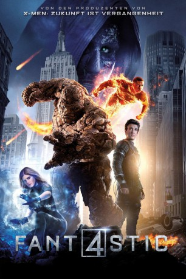

#1967 Fantastic Four
 
 IMDB-Wertung: 4.3 / 10
IMDB-Wertung: 4.3 / 10  Metascore: 27
Metascore: 27 
FANTASTIC FOUR erzählt von vier jungen Außenseitern, die in ein gefährliches Paralleluniversum teleportiert werden. Die neue und ungewohnte Umgebung hat immense Auswirkungen auf die physische Konstitution des Teams. Ihr Leben wird unwiderruflich auf den Kopf gestellt und die vier müssen nicht nur lernen mit ihren neuen, angsteinflößenden Fähigkeiten umzugehen, sondern auch Seite an Seite zu kämpfen, um die Welt vor einem neuen Feind zu retten...
Jahr: 2015
Dauer: 100 Minuten
FSK: 12
Land: USA Studio: 20th Century FoxTonspuren:
Untertitel: Englisch, Deutsch,
Auflösung: 1080p (1920x808) Größe: 8908 MB
Genre: Action, Sci-Fi, Abenteuer
Regisseur: Josh Trank
Drehbuch: Jeremy Slater, Simon Kinberg, Josh Trank, Stan Lee, Jack Kirby
Soundtrack: Marco Beltrami, Philip Glass
Darsteller:
 Miles Teller als Reed Richards
Miles Teller als Reed Richards Michael B. Jordan als Johnny Storm
Michael B. Jordan als Johnny Storm Kate Mara als Sue Storm
Kate Mara als Sue Storm Jamie Bell als Ben Grimm / The Thing
Jamie Bell als Ben Grimm / The Thing Toby Kebbell als Victor Von Doom / Dr. Doom
Toby Kebbell als Victor Von Doom / Dr. Doom Reg E. Cathey als Dr. Franklin Storm
Reg E. Cathey als Dr. Franklin Storm Tim Blake Nelson als Dr. Allen
Tim Blake Nelson als Dr. Allen- Joshua Montes als Quarterback Speech School Kid
 Dan Castellaneta als Mr. Kenny
Dan Castellaneta als Mr. Kenny- Owen Judge als Young Reed
- Kylen Davis als Teasing School Kid
- Evan Hannemann als Young Ben
- Chet Hanks als Jimmy Grimm
 Mary-Pat Green als Mrs. Grimm
Mary-Pat Green als Mrs. Grimm Tim Heidecker als Mr. Richards
Tim Heidecker als Mr. Richards- Mary Rachel Dudley als Mrs. Richards
 Wayne Pére als Science Fair Judge
Wayne Pére als Science Fair Judge- Rhonda Dents als Science Fair Judge
- Dennis Thomas IV als Baxter Security Guard
- Abhi Trivedi als Baxter Employee
- Benjamin Papac als Baxter Student
 Jim Gleason als Board Member
Jim Gleason als Board Member- Brian Stapf als Reed's Guard, Area 57
- Ben VanderMey als Soldier, Area 57
- J.T. Rowland als Monkey Test Lab Technician
 Gretchen Koerner als Reed's Scientist, Area 57
Gretchen Koerner als Reed's Scientist, Area 57 Hunter Burke als Reed's Scientist, Area 57
Hunter Burke als Reed's Scientist, Area 57 Han Soto als Reed's Doctor, Area 57
Han Soto als Reed's Doctor, Area 57 Michael 'Mick' Harrity als Military Interrogator, Area 57
Michael 'Mick' Harrity als Military Interrogator, Area 57- Melissa McCurley als Sue's Doctor, Area 57
- Jane Rumbaua als Johnny's Doctor, Area 57
 Anthony Reynolds als Airplane Military Official, Area 57
Anthony Reynolds als Airplane Military Official, Area 57- Spence Maughon als Johnny's Technician, Area 57
 Lance E. Nichols als DC Senior Official, Area 57
Lance E. Nichols als DC Senior Official, Area 57 Deneen Tyler als DC Military Official, Area 57
Deneen Tyler als DC Military Official, Area 57 Marco St. John als DC Military Official, Area 57
Marco St. John als DC Military Official, Area 57 Shauna Rappold als Computer Military Tech, Area 57
Shauna Rappold als Computer Military Tech, Area 57- Fernando Rivera als Disguised Reed
- Juan Corrigan als Barber Shop Owner
 Jaylen Moore als Tarmac Guard
Jaylen Moore als Tarmac Guard- David Kency als Tarmac Guard
 Adam Fristoe als Quantum Gate Scientist, Area 57
Adam Fristoe als Quantum Gate Scientist, Area 57 Dina Morrone als Emergency Announcer, Area 57
Dina Morrone als Emergency Announcer, Area 57 Don Yesso als General
Don Yesso als General- Jerome Andries als Baxter Security Guard #1 , uncredited
 Michael D. Anglin als Baxter Board Member , uncredited
Michael D. Anglin als Baxter Board Member , uncredited Sue-Lynn Ansari als Baxter Board Member , uncredited
Sue-Lynn Ansari als Baxter Board Member , uncredited John L. Armijo als Local Cop #2 , uncredited
John L. Armijo als Local Cop #2 , uncredited Tim Bell als Local Cop , uncredited
Tim Bell als Local Cop , uncredited Nicolas Bosc als Rebel , uncredited
Nicolas Bosc als Rebel , uncredited
Datei: X:\Comic-Filme\Fantastic Four\Fantastic Four (2015, FSK12, 1920x808).mkv seit 10.09.2015
Festplatte: Comicverfilmungen+MusikCD
 Alle Filme aus Gruppe 'Comic-Filme\Fantastic Four'
Alle Filme aus Gruppe 'Comic-Filme\Fantastic Four'